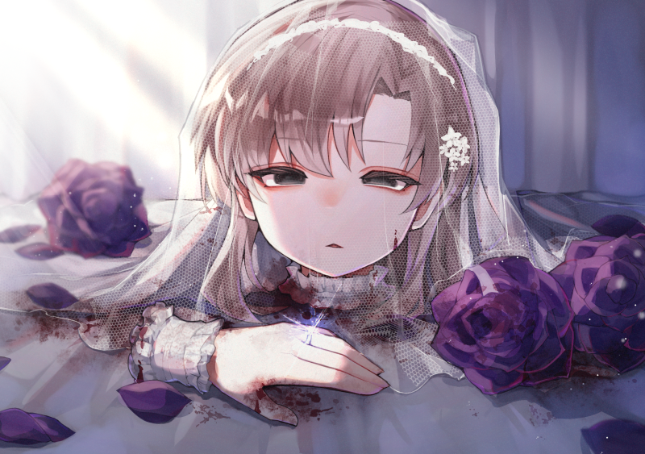
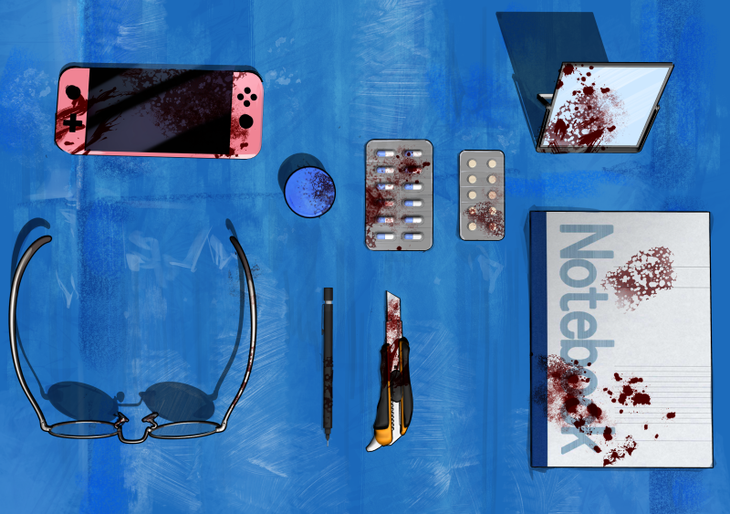
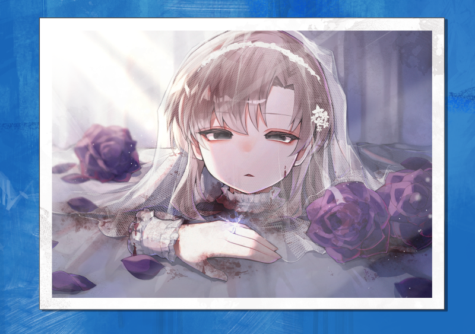
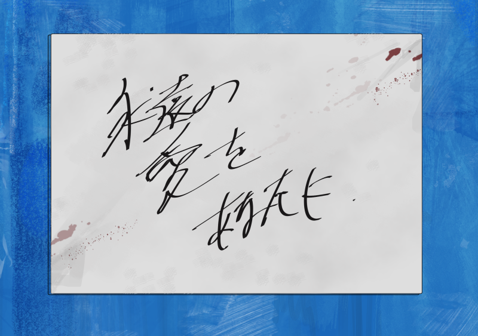

郡山市四地点同時バラバラ遺体遺棄事件

郡山市四地点同時バラバラ遺体遺棄事件（こおりやましよんちてんどうじばらばらいたいいきじけん）は、2021年6月14日の早朝、福島県郡山市内4箇所で若い女性の切断遺体の一部が発見された 未解決猟奇事件である。遺体はいずれも黒いゴミ袋に入れられ、被害者に縁の深い場所の前に意図的に置かれていた。
押収された写真の中にはウエディングドレス姿に装飾された被害者の生首が写された写真も含まれており、このことから本事件は一部で生首ウエディング事件とも呼ばれている。
なお、被害者の頭部および左手は発見されておらず、2026年現在も未解決である。
概要
2021年6月14日午前5時頃、福島県郡山市の住宅街にある一軒家の玄関前で、黒いゴミ袋に入った人間の腕が発見された。現場は、被害者の実家であり、住人である母親が異臭を不審に思って 袋を確認したところ、人間の遺体の一部が入っているのを発見し、警察に通報したことで事件が発覚した。
その後、午前6時には郡山市内のアパート前（被害者が居住していた場所）で両足が入った袋が、午前6時半には郡山市内のマンション前（交際相手の自宅）で上半身の一部が入った袋が、 午前7時には郡山市内の大学前（被害者が通っていた大学）で両手が入った袋がそれぞれ発見された。
いずれの袋も一般のゴミ収集とは無関係であり、早朝の人目に触れやすい時間帯を狙って、“見える場所”に意図的に配置されていたことが判明している。
黒い袋の中には遺体の他に、同一人物の私物や日用品、複数の写真が大量に混入しており、すべて被害者のものであることが確認された。写真の多くは隠し撮りされたものであり、 数年前から被害者に対して執拗なストーキング行為が行われていたとみられている。
被害者
被害者は、郡山市内の大学に通っていた女性（当時24歳）。郡山市内のアパートで一人暮らしをしており、6月10日を最後に行方が分からなくなっていた。
生前、被害者は複数の友人に「家の中のものが無くなっている」「誰かに勝手に入られているような気がする」などと不安を訴えていたが、目立ったストーカー被害の報告や警察への相談は確認されていない。

発見状況と中身
袋の中には遺体のほか、被害者の私物や生活用品などが多数混入していた。確認された主な物品は以下の通りである。
・血痕の付着した衣類や日用品
・被害者が使用していた電子機器
・筆記用具や手帳などの私物
・医薬品や生活雑貨の一部
・数百枚に及ぶ写真（自室内、入浴中、就寝中など盗撮されたとみられる）
これらの写真の多くは被害者の自宅周辺や室内で撮影されたものとみられており、犯人が長期間にわたり被害者の生活を監視していた可能性が指摘されている。


写真に写っていた頭部と左手
押収された写真の中には、切断された被害者の頭部と左手（結婚指輪がはめられていた）が写された写真も含まれていた。写真には濃い紫色のバラが周囲に散りばめられており、 遺体の一部が意図的に配置された状態で撮影されていたとみられている。
写真の裏面には「永遠の愛をあなたに」と書かれていた。なお、濃い紫色のバラには永遠の愛という意味があるとされている。
犯人像と謎
現場の防犯カメラや証言から、犯人らしき人物の映像・目撃は一切得られていない。遺棄はそれぞれの地点で早朝4〜5時台に行われた可能性が高いとされるが、目撃例は皆無である。
警察は、発見された写真や所持品の異常性から、被害者に強い執着を持ったストーカー犯による犯行と見て捜査を進めたが、2026年現在も容疑者の特定には至っていない。